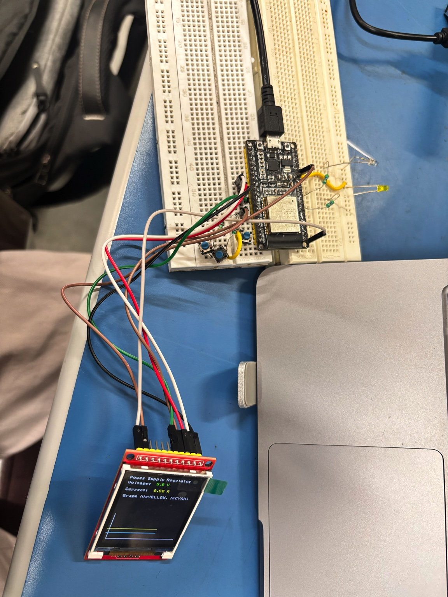

From circuit.
To system.
I’m Amlesh Sahoo. I design embedded systems across electronics, firmware, PCB design, and data acquisition.
Selected projects
HARDWARE / FIRMWARE / ACQUISITIONMCU Data Logger
A two-layer acquisition-board design with timestamping and nonvolatile storage.
- ATmega328P
- EEPROM / RTC
- KiCad
Photodiode Sensor
Selectable-gain analog circuitry connects light sensing to ESP32 and Python acquisition.
- Analog / LTspice
- KiCad
- ESP32 / Python
Photoacoustic Acquisition
Developing timed ADC capture and DMA buffering for pulsed-LED photoacoustic research.
- STM32H7
- ADC / DMA
- Timing
Embedded Power Systems
ESP32 display and Flutter prototypes make power-system telemetry visible and interactive.
- ESP32
- Flutter
- BLE / WebSocket
Four-Node Ethernet Telemetry
Four ESP32/W5500 nodes stream generated waveforms to independent dashboard channels.
- 4 × ESP32
- W5500
- WebSocket
Curious about the whole system.
Electrical Engineering student in the BITS Pilani–Iowa State University dual-degree program, interested in embedded systems, PCB design, data acquisition, and hardware–software integration.
Experience & background ↗
From the bench to the interface.
ESP32 display prototypes, power-system interfaces, and four-node Ethernet visualization—connecting embedded hardware with usable data.
Explore the internship work